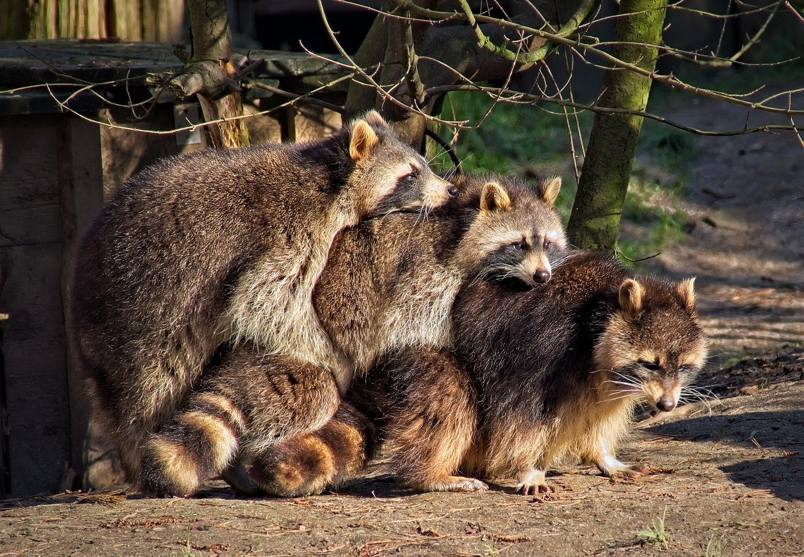

Welcome to Wild Rescues. Our mission is to rescue, rehabilitate, and release wildlife back into their natural environment. We are a nonprofit organization dedicated to helping injured wildlife, or orphaned wildlife.
Our staff provides around-the-clock care for wildlife in need. We also provide long-term care for wildlife that cannot be released back into their natural environment.
Will you partner with us? We need caring volunteers to help care for our animals. You can also donate, become a member, or become a sponsor. Contact us today.
Our Latest Rescue: Baby Raccoons

Meet our latest rescues, Fizz, Bandit, and Mohawk. These three little guys were found abandoned near a home.